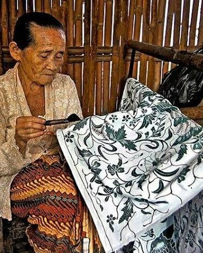

Tentang Batik
Batik berasal dari kata amba (menlis) dan titik. Awalnya, batik hanya dibuat dan dipakai oleh kalangan bangsawan di keraton Jawa. Terutama Yogyakarta dan Surakarta. Lama-kelamaan, batik menyebar ke masyarakat luas dan setiap daerah melahirkan motif khasnya, seperti baik Pekalongan, Solo, Yogyakarta, Cirebon, Betawi.
Motif Batik
Pekalongan, Solo, Yogyakarta, Cirebon, Betawi
Filosofi Batik
Ada berbagai filosofi yang terkandung dalam setiap motif batik. Yaitu ada 3...

Batik Parang

Batik Mega Mendung
Motif awan berlapis, melambangkan kesabaran dan ketenangan. Berasal dari Cirebon dengan pengaruh budaya Tionghoa.

Batik Sidomukti
Bermakna doa agar hidup makmur, mulia, dan bahagia. Biasanya dipakai dalam acara pernikahan adat Jawa.
Model Batik
Seperti ini contoh modelnya